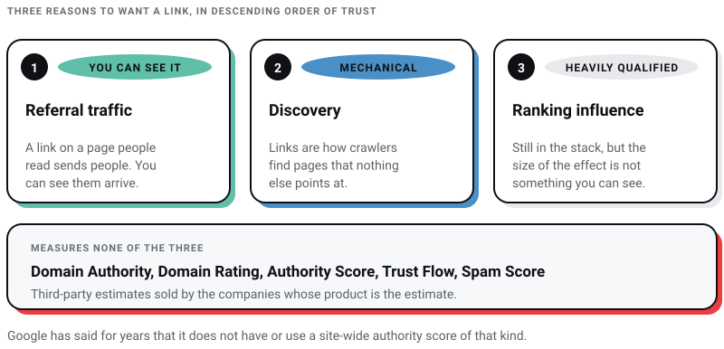
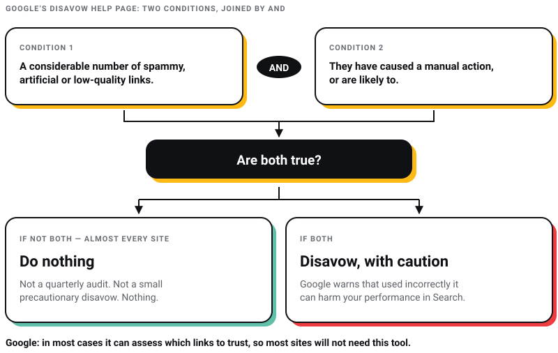

Digital Marketing
Digital Marketing
AEO vs GEO vs SEO: What Actually Matters in 2026 (And What Is Just Noise)
Learn about AEO vs GEO vs SEO. Discover what changed with AI search, what still matters, and how to optimize for Google AI Overviews, ChatGPT, and…

I have sold link building. The part of it I will argue with anybody about is the audit that ends with a list of toxic links to disavow, because Google’s own help page for the disavow tool says most sites will not need it, and John Mueller has called the tool-flagged version of that ritual a billable waste of time. It is the most reliably billed activity in the discipline and it is advice against the manufacturer’s instructions.
What follows is what I can defend about links in July 2026. It is less than an outreach agency will tell you and more than the people announcing that links are dead will admit.
Links still count. PageRank is still named in Google’s own guide to its ranking systems, and a link from a page a real person reads still sends real people to you. What has changed is everything around that sentence. Links are not a top-three signal any more, by Google’s own account. They cannot be bought without breaking a published policy. The scores most agencies report them with are invented by the companies selling the reporting tools. And the ranking those links buy converts into fewer visits than it did, because a growing share of answers never leaves the results page.
So the honest programme is narrow. Publish something a person would want to cite, tell the small number of people who would plausibly cite it, keep your own internal linking tidy, and then leave your link profile alone. Most of the effort the link-building industry sells sits in the gap between that paragraph and its invoice.
Both of these open link-building pitches every week. Neither survives a look at where it came from.
“93% of all online experiences begin with a search engine.” I went looking for the study. There is no study. The sentence is usually credited to Forrester by pages that do not link to any Forrester document, and the same claim circulates elsewhere as 68% and as 73% with the same absent citation. A figure that arrives in three sizes with no method attached is not evidence, it is decoration.
“Backlinks are one of the top three ranking factors used by Google.” This traces back to a 2016 Google Q&A and has been repeated ever since as though nothing happened in the decade after. Something did. At PubCon in September 2023, Google’s Gary Illyes said he would not put links in the top three ranking signals and that they had not been there for some time (Search Engine Roundtable, 24 September 2023).
I am starting here because everything below is downstream of it. A link strategy built on a made-up market share and an expired ranking position produces a made-up budget.
A backlink is a link on somebody else’s page pointing at yours. That is the whole definition. The industry then wraps it in the language of votes, endorsements and juice, which is a metaphor Google itself has spent years walking back, so it is worth being precise about what the mechanism actually is.
Google’s guide to its ranking systems still says: “We have various systems that understand how pages link to each other as a way to determine what pages are about and which might be most helpful in response to a query. Among these is PageRank, one of our core ranking systems used when Google first launched” (Google Search Central, last updated 10 December 2025). Note what that sentence claims and what it does not. Links help Google work out what a page is about and which pages might help. It does not say a link is a vote you can accumulate until you outrank someone.
Most link-building advice still describes links as either do-follow or no-follow. That was the correct model in 2018 and has been wrong since 10 September 2019. That is the day Google introduced the other two values and said all three would be treated as hints rather than instructions it must obey, for ranking straight away and for crawling and indexing from 1 March 2020 (Google Search Central Blog, 10 September 2019). Three values, then, and none of them a command.
| Markup | What it is for | Where you will meet it |
|---|---|---|
| No markup | An ordinary editorial link. Nothing is being declared. | A journalist or blogger citing you because they wanted to. |
rel="sponsored" |
Google’s wording: “Mark links that are advertisements or paid placements (commonly called paid links).” | Anything you paid for, including the guest post you paid a placement fee to run. |
rel="ugc" |
Google’s wording: “user-generated content (UGC) links, such as comments and forum posts”. | Reddit, comment sections, most community platforms. |
rel="nofollow" |
Google’s wording: use it “when other values don’t apply, and you’d rather Google not associate your site with, or crawl the linked page from, your site”. | Wikipedia, many news sites’ outbound links, moderated directories. |
Google’s documentation says links carrying these attributes “will generally not be followed” (Google Search Central). Generally, not never. That word is the entire change, and it cuts both ways: you cannot assume a nofollowed link is worthless, and you cannot assume marking a paid link as sponsored makes buying it acceptable. It does not. It makes it disclosed.
The practical consequence for anyone paying for links: the marketplace sells you a link that passes credit, which means the seller is deliberately not disclosing a paid placement. You are not buying a signal. You are buying a policy violation with your domain attached to it.
Three reasons, in descending order of how much I trust them.
Referral traffic, which is the only one you can measure directly. A link on a page people actually read sends people. You can see them arrive. Nobody needs a model to believe in this, and it is the reason I still care about links at all.
Discovery. Links are how crawlers find pages that nothing else points at. If a page on your site has no internal links and no external ones, you are relying entirely on a sitemap to get it noticed.
Ranking influence, heavily qualified. Link analysis is still in the stack, per the quote above. But the size of the effect is not something you or I can observe, and the correlation studies that claim to measure it are correlating with the same thing everything else correlates with: being a well-known site that publishes good work.
There is a fourth thing worth saying, because it changes the arithmetic behind any link budget. Ranking and being visible have come apart. Ahrefs looked at 863,000 keyword SERPs and found that 37.9% of pages cited in AI Overviews also rank in Google’s top ten, down from roughly 76% the previous July (Ahrefs, 2 March 2026). If a chunk of your visibility now comes from being quoted rather than ranked, then buying rank with links buys you less than the pitch deck assumes. I have written about what that does to the whole discipline in AEO vs GEO vs SEO.

Quality, and it is not close. But “quality” has been defined for a decade by tool vendors, so here is the version I use with clients, in plain language.
A link is worth having if a person who is not you would click it. That is the test. It survives every algorithm update because it is not about algorithms. Run any prospective link through it and most of the link-building industry falls away: nobody clicks a link in the footer of a site about nothing, or in the ninth paragraph of a filler article produced for a flat fee by somebody who has never used your product, or in a directory that exists to hold links.
Quantity earns you one thing worth having: a profile that does not look manufactured. A site with 400 links from 300 different places looks like a site people cite. A site with 400 links from 12 places looks like a site that bought a package. You do not need to engineer that diversity. You get it for free if you earn links honestly and you cannot fake it convincingly if you do not.
Ordered by how much I would actually weigh them.
Covered above, and it subsumes half the usual list. A link inside the main body of a page whose audience overlaps with yours passes this. A sidebar link on a page nobody reads does not.
The linking page should be about something adjacent to what you do. A Kolkata furniture retailer linked from an interiors publication is coherent. The same retailer linked from a cryptocurrency blog is not, and no metric will make it so.
Body copy beats footers, sidebars and author bios. This is partly about crawler treatment and mostly about the fact that nobody reads footers.
If you chose the anchor text, it is not an editorial link. That is not a moral point, it is a descriptive one, and it is the line Google’s spam policy draws too. Its list of link spam includes “links with optimized anchor text in articles, guest posts, or press releases distributed on other sites” (Google Search Central, spam policies, last updated 15 May 2026).
Vary it, and mostly by not controlling it. A natural profile is full of brand names, bare URLs and phrases like “this guide”, because that is how people write. A profile where 40 links all say the same commercial phrase was assembled by one person with a spreadsheet, and it reads that way to a human reviewer as clearly as to a machine.
Domain Authority, Domain Rating, Authority Score, Trust Flow and Spam Score. Every one of those is a third-party estimate sold by a company whose product is the estimate. Google has said for years that it does not have or use a site-wide authority score of that kind. Gary Illyes in 2015: “We don’t have ‘authority’, but signals should pass on, yes.” John Mueller in 2022, more bluntly: Google does not use it at all. Search Engine Journal keeps the collected quotes with dates attached (Search Engine Journal, 10 January 2023). They are fine as a rough sorting device when you are staring at 500 domains and need an order to work through them. They are not a target, and a report that grades a campaign by average DA is grading itself.
I want to quote the source here rather than characterise it. Google’s help page for the disavow tool says: “In most cases, Google can assess which links to trust without additional guidance, so most sites will not need to use this tool.” It then sets two conditions, and they are joined by AND, not OR: you should disavow only if you have a considerable number of spammy, artificial or low-quality links pointing at your site, AND those links have caused a manual action or are likely to. The same page warns that the tool “should only be used with caution” and that used incorrectly “can potentially harm your site’s performance in Google Search results” (Google Search Help).
Now hold that next to what the industry sells. A tool crawls your backlinks, assigns each one a toxicity score it invented, and produces a list to upload. John Mueller’s response to that workflow, in December 2024, was that disavowing links flagged as toxic by tools is a billable waste of time (Search Engine Roundtable, 17 December 2024). Notice where the word toxic comes from. It is not in Google’s link spam policy and it is not on the disavow help page. It is a vendor classification, invented by the companies that sell you the remedy for it.
So the rule I give clients: if you have no manual action in Search Console, do nothing. Not a quarterly audit, not a small precautionary disavow, nothing. Spam links pointing at you are somebody else’s activity and Google’s problem to ignore. Google’s December 2022 link spam update, which used SpamBrain, was explicitly built to neutralise the effect of unnatural links rather than to punish the sites they point at (Google Search Central Blog, 14 December 2022). The system is designed to make your negative-SEO panic unnecessary.

Read the manual action report in Search Console instead. If it is empty, you are fine, and the agency invoicing you for link detox is selling you insurance against a fire that Google put out.
Google’s spam policies list “Buying or selling links for ranking purposes” and spell out that this includes exchanging money for links or for posts containing links, exchanging goods or services for links, and sending someone a product in exchange for them writing about it with a link. The list also names advertorials and native advertising where payment is received for articles carrying credit-passing links.
Most link buying in India is not sold as link buying. It arrives as a content partnership, a media package, a sponsored feature, or a monthly retainer with a guaranteed number of placements. Guaranteed placements are the giveaway. Nobody can guarantee that an editor will want to cite you, so anybody guaranteeing it is paying an editor.
The mistake I see most in audits is a link programme with no theory of who would link and why, just a monthly volume target. It produces the profile described above: many links, few distinct sources, all pointing at the two commercial pages the client cares about, all with the same anchor text.
The methods below are the ones that survive contact with Google’s current spam policies and with a reader’s attention.
This is first because Google says it is first. Its generative-AI optimisation guidance, published on 15 May 2026, says unique, compelling and useful content will influence your presence “more than any of the other suggestions in this guide”, and contrasts a commodity headline like “7 Tips for First-Time Homebuyers” with a non-commodity one like “Why We Waived the Inspection & Saved Money” (Google Search Central).
Applied to links, that means the thing worth publishing is the thing only you could publish. A number from your own operations. A method you use and can describe. A position you are willing to defend in public and lose an argument over. Nobody links to your definition of a backlink. They might link to your pricing, your failure, or your data.
Find pages in your field that link to something now dead, have a genuine replacement, and tell the page owner. It survives because the value to them is real and independent of whether they link to you: their page is broken and you told them. Any browser extension that flags dead links on a page will do the finding; the crawl tools sell it as a feature but you do not need one to start.
Journalists and editors need someone to quote. Being reachable, fast and quotable on a narrow subject earns more citations over a year than any outreach sequence I have run. This is slow, it does not fit in a quarterly plan, and it is the only method on this list that compounds.
If you do send emails, know the base rate before you budget the time. Backlinko and Pitchbox analysed 12 million outreach emails and found 8.5% received any response (Backlinko with Pitchbox, 16 April 2019). That study is now old enough to vote and the number has not improved since, because everyone read the same study and started sending follow-ups.
What I tell my own team: send fewer, to people whose work you have actually read, and only when you have something they would want regardless of the link. If you cannot write a sentence explaining why this specific person benefits, do not send it.
You control every one of these and they are free. Most sites I audit have a handful of pages carrying all the inbound attention and a long tail nothing points at. Linking the tail from the head is the cheapest structural improvement available, and it is the one item on this page you can finish this week. I go through the mechanics in my post on lifting website traffic.
Guest posting at volume, resource-page and link-roundup outreach, competitor backlink replication, and dropping links into forums and Q&A sites. You will find all four on most link-building lists. The first three describe placing links you chose with anchor text you wrote, which is the pattern Google’s policy names. The fourth is covered below, and the short version is that it does not do what those lists say it does.
The standard version of this advice tells you to answer questions on Reddit and Quora with links back to your content. I checked both platforms myself on 30 July 2026 rather than repeating what other posts claim.
Outbound links in Reddit posts carry rel="nofollow ugc". I pulled a subreddit’s top page and counted them. Separately, reddit.com/robots.txt currently reads User-agent: * followed by Disallow: /, which is a blanket instruction to stay out. Quora’s robots.txt opens with a notice prohibiting use of its content for AI training without a contractual licence and asks search engines to email for crawl permission.
You will also see the figure of $60 million a year quoted as the value of Google’s Reddit deal. That number comes from press reporting, not from a disclosed contract. Reddit’s own filing described its AI licensing arrangements in aggregate without naming Google’s share. Quote it as reporting or not at all.
None of which means stay off these platforms. It means go for the people. A useful answer on Reddit reaches a self-selected audience of exactly the people with your problem, and some of them will search your name afterwards. That is worth doing. It is not a link-building tactic, and describing it as one is how you end up with a team member posting promotional replies and getting the account banned.
Three things, and a longer list of things to stop reporting.
Free, and it is Google’s own view of who links to you. It shows your top linked pages, top linking sites and top linking text. Read its caveat before you build a dashboard on it: Google says the report “isn’t a comprehensive list of every link on your site” and shows a sample, with tables capped at 1,000 rows (Google Search Help). It also does not tell you whether a link is nofollowed. Treat it as the shape of your profile, not a census.
The number that pays for itself. If a link sends nobody, it did not do the job the pitch promised, whatever it scores.
Check it. Then stop checking it weekly.
Average Domain Authority of acquired links, total referring domains as a headline, and any toxicity score. The first two go up whether or not anything improved. The third is a number a vendor made up to sell you the remedy for it.
Nearly every link-building post carries one: Forbes, HubSpot, Entrepreneur, Inc. and the Content Marketing Institute named as places to get high-quality backlinks, each with a Domain Authority and a spam score beside it. I would not send a client at any of them, for four reasons.
The metrics are third-party estimates presented as facts. Every DA and spam score in those lists is a vendor’s guess quoted with no date and no source, describing something Google says it does not use.
The tactic is named in Google’s spam policies. Placing an article on a large site in order to carry a link with your chosen anchor text is the exact pattern in the link spam list quoted earlier. The size of the host does not change what the activity is.
Large publishers are the ones under scrutiny for this. Google’s site reputation abuse policy targets third-party content published on a host site mainly because of that host’s established ranking signals. It was announced on 5 March 2024, took effect on 5 May 2024, and was tightened on 19 November 2024 to apply regardless of whether there is first-party involvement or oversight (Google Search Central Blog, November 2024). Google never officially names which sites received manual actions, so treat any list of casualties you read as reporting rather than record. But the direction is not ambiguous: the borrowed-authority trade is the thing being policed.
The doors described are shutting anyway. Forbes cut contracts with dozens of contributing writers in December 2025 and now expects contributors to publish at least two articles a month that make an impact (Press Gazette, 8 December 2025). HubSpot still accepts pitches, and its editorial guidelines cap you at one link to your own site in the body, subject to an editor deciding your pitch is worth publishing at all. That is a normal editorial relationship, which is fine, and it is nothing like the guaranteed placement those lists imply.
If you want to write for a large publication, write for it because its readers are your buyers. That is a media strategy and it can be a good one. It is not a link strategy, and selling it as one is how agencies end up promising outcomes they cannot control.
Google has kept shipping. Since the start of 2025 its public ranking-update history lists a core update in March 2025, a core update in June 2025, a spam update in August 2025, a core update in December 2025, a Discover update in February 2026, a spam update and a core update in March 2026, a core update in May 2026 and a spam update in June 2026 (Google Search Status Dashboard). Any SEO post whose timeline stops in 2024 has not been read by its author since.
The quality rater guidelines were updated on 11 September 2025, and the framework is E-E-A-T now, with the extra E for Experience. Section 3.4 uses Trust as its literal fourth word and calls it the most important member of the family. First-hand experience is not a tone you adopt. It is something you either have and can show, or do not.
What I expect: the value of a link keeps drifting from ranking influence toward being a route by which a machine finds and attributes you. Whether that turns out to be true is testable, and the test is whether pages with strong citation profiles keep appearing in generated answers when their rankings slip. I will revisit this section when there is evidence rather than a theory.
There is no number, and anybody who gives you one is quoting a competitor’s profile as though it were a threshold. Links are one input among many and the effect is not additive in a way you can plan around.
No, unless you have a manual action. See the section above. This is the single most common paid-for activity that Google’s own documentation advises against.
No. Google treats the attributes as hints, and a nofollowed link on a page people read still sends you people, still gets your name in front of an audience, and still looks like the profile of a site that exists in the world.
Your competitors buying links is not evidence that it works, only that they believe it does. I have watched sites ranking on bought links get flattened by a spam update and take a year to recover. I have never watched a site get flattened for having too few paid links.
A handful between genuinely related businesses is how the web has always worked. A spreadsheet of reciprocal placements is what Google’s policy calls excessive link exchanges. The difference is whether the link would exist if the other one did not.
If you have an afternoon, spend it on internal links. Find the pages nothing points at and link them from the pages that already get attention. It is free, it is fully under your control, and on most sites I audit it moves more than a quarter of outreach would.
If you have a quarter, publish one thing only your business could publish. A number from your own books, a method you actually use, a decision that went badly and what it cost. Then send it to twenty people by name who would care. That is the whole programme, and I would rather sell you that than a monthly link quota I cannot defend.
If you have a manual action, that is a different post and a different conversation. Everything else on this page assumes you do not, because most sites do not.
We build and run sites from Salt Lake in Kolkata, for clients including Coca-Cola, ITC and Marico, and we do not sell link packages. If you want the rest of the picture, my SEO checklist covers the on-page work this post deliberately skips, and my take on the Skyscraper Technique examines the most famous link-building method of the last decade and explains which two-thirds of it stopped working. If you are weighing organic against paid, SEO vs Google Ads is the honest comparison, written by someone who sells one of them.
14 min read 25 cited sources Digital Marketing
Author
Khurshid Alam is the founder of Pixel Street, an AI-native design & development studio. Design thinking on weekdays and spreadsheets on weekends.
He writes about growth, design, and AI, mostly because someone has to say the quiet parts out loud.
Digital Marketing
Learn about AEO vs GEO vs SEO. Discover what changed with AI search, what still matters, and how to optimize for Google AI Overviews, ChatGPT, and…
 Digital Marketing
Digital Marketing
Discover the 5 reasons ChatGPT recommends your competitors instead of your business—and how to improve AI visibility, SEO, GEO, and AEO.
 Digital Marketing
Digital Marketing
Want ChatGPT to recommend your brand? Learn how AI chooses businesses, where citations come from, and practical ways to increase your visibility.